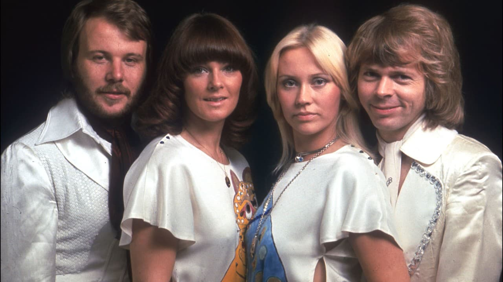

Temática
HISTORIA DE ABBA
La banda sueca ABBA fue creada en Estocolmo en 1972 y esta integrados por dos parejas: Agnetha Fältskog, Björn Ulvaeus, Benny Andersson y Anni-Frid Lyngstad, incluso el nombre de dicha banda es un acrónimo de las primeras letras de sus nombres. ABBA alcanzó la fama internacional después de ganar el Festival de la Canción de Eurovisión en 1974 con la canción "Waterloo". Desde entonces, se convirtieron en un fenómeno global, produciendo una serie de éxitos que dominaron las listas de música en todo el mundo durante la década de los 70 y principios de los 80.
GIRAS DE ABBA
| Lugar/fecha | Descripción |
|---|---|
| Suecia (1973-1974) | Antes de ganar Eurovisión, los miembros de ABBA ya se presentaban juntos en conciertos menores dentro de Suecia. Sin embargo, estos conciertos fueron más bien modestos y no bajo el nombre de ABBA, sino como parte de otros proyectos musicales de los integrantes. |
| Eurovisión 1974 (Brighton, Reino Unido) | Aunque no fue un concierto, la presentación de ABBA en el Festival de Eurovisión en Brighton, Reino Unido, el 6 de abril de 1974, fue crucial. Su interpretación de "Waterloo" marcó un antes y un después, ya que les permitió ganar el concurso y catapultarlos a la fama internacional. |
| Tour en Europa y Escandinavia (1974-1975) | Después de Eurovisión, ABBA realizó varios conciertos en Suecia, Dinamarca, Finlandia, Noruega y otros países europeos. Estos fueron algunos de sus primeros conciertos en escenarios más grandes, con una audiencia que crecía rápidamente gracias al éxito de "Waterloo". |
| Tour por Europa (1977) | En 1977, ABBA realizó su primer gran tour por Europa, incluyendo su primer concierto en Londres en el Royal Albert Hall, donde los boletos se agotaron en horas. Este tour también incluyó presentaciones en Alemania, los Países Bajos, y otros países europeos. |